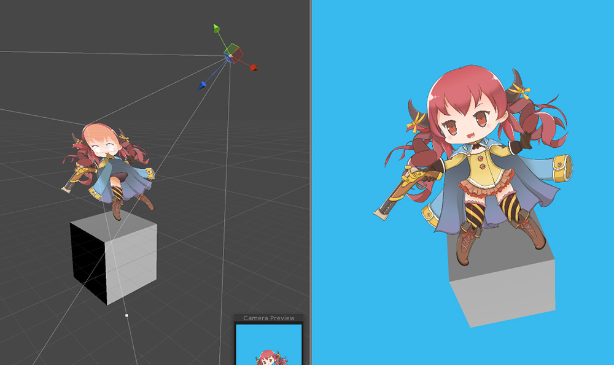

AnyPortrait > マニュアル > ビルボードと「Perspective」カメラ
ビルボードと「Perspective」カメラ
1.1.0

AnyPortraitは基本的に2Dゲームのエディタです。
しかし、3Dの背景に2Dキャラクターを導入するなどの様々なゲームメソッドにも対応しています。
このページでは、3Dゲームで使用されるPerspectiveのカメラでAnyPortraitで作成されたキャラクターをレンダリングする方法と、3Dゲームでビルボードを設定する方法について説明します。
この機能を使用して開発された「Pirate Game3D」のデモを確認してください。
「Perspective」カメラ : 遠近感のあるカメラです。その逆は「Orthographic」方式です。
ビルボード(Billboard) : オブジェクトがカメラを正面に続け眺めるレンダリング方式では、主にエフェクトに使用されます。

(1) 「Bake」ダイアログボックスを開きます。
(2) 「Setting」タブで、「Billboard」の設定を変更します。
- None : ビルボードを使用していません。Perspectiveカメラはサポートされていません。
- Billboard : ビルボード方式でレンダリングをします。
- Billboard with fixed Up Vector : ビルボードとしてレンダリングされ、ワールド座標系のUp(+Y)方向を維持します。
「Perspective」カメラのオプションは、個別に存在しません。
「Billboard」の設定が「None」ではない場合、カメラがレンダリングされる方法を認識して、「Perspective」カメラが自動的にサポートされます。
(「Orthographic 」カメラはビルボードオプションに関係なくサポートされています)
注意。
ビルボード方式を使用すると、カメラの「Camera.transparencySortMode」プロパティが「TransparencySortMode.Orthographic」に自動的に変更されます。

掲示板の設定がオンになっているときに、ゲームが開始されると、自動的に「レンダリングするカメラ」を検索し、その方向を見続けます。
カメラが「Orthographic」か「Perspective」かを認識した後、形状はカメラに合うように修正されます。

Billboard setting: None
カメラを見ず、順番に正しく表示されません。

Billboard setting: Billboard
常にカメラを見る。
カメラに遠近感があっても正常に表示されます。
カメラが傾いても、常にまっすぐにレンダリングされます。

Billboard setup: Billboard with fixed Up Vector
常にカメラを見る。
カメラに遠近感があっても正常に表示されます。
「Billboard」の方法とは異なり、ワールド座標系のY方向は、固定されているので、カメラは傾いたかのように表示されます。